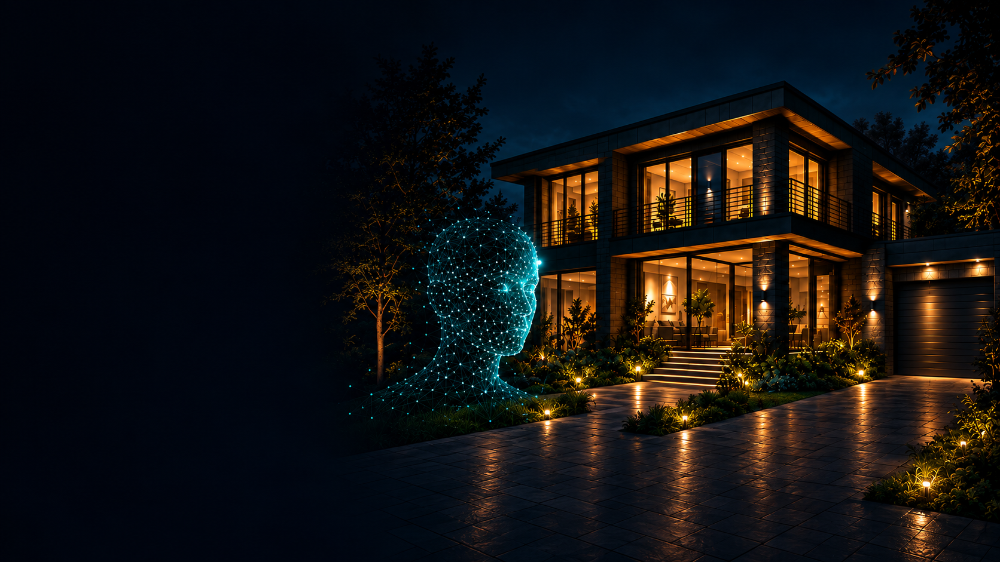

Primero, revisemos
tus cámaras.
La compatibilidad se evalúa por vivienda. El equipo revisará marcas, modelos y conexión antes de confirmar una solución.
Consultar sobre mis cámaras
SEGURIDAD · INTELIGENCIA ARTIFICIAL · TU HOGAR
Conecta cámaras compatibles, reconocimiento facial y avisos en una experiencia pensada para tu hogar.
Catalina · Asistente de voz con IA.
Integración y disponibilidad según la configuración de cada hogar.
Ilustración conceptual creada con IA
Reconocimiento facialPersonas registradas
Cámaras compatiblesEvaluación por hogar
Avisos y disuasiónApp · llamadas · voz opcional
EL VALOR DE INTEGRAR
ProtectIA HOME combina detección y verificación con IA para ayudar a decidir los avisos. También intervienen las reglas del sistema y el estado del servicio.
El reconocimiento facial trabaja con personas previamente registradas y con la configuración de tu instalación.
Puedes integrar avisos en la app, llamadas configuradas y disuasión por voz con parlante opcional, según tu instalación.
Puede haber avisos incorrectos o eventos no detectados. La recepción depende de energía, conexión y servicios disponibles.
Conversemos sobre tu hogarModelos y conexión compatibles
Detección · personas registradas · reglas
App · llamadas configuradas · voz
La disuasión por voz requiere un parlante opcional. Canales sujetos a la configuración de cada hogar.
PARTAMOS POR TU REALIDAD
Tu necesidad y tu comuna.
Instalación, alcance y compatibilidad.
Propuesta y condiciones antes de contratar.
DOS NECESIDADES, DOS PROPUESTAS
HOME y Comunidad Vecinal tienen alcances distintos. Puedes consultar por cada propuesta por separado.
Servicio de pago para integrar componentes de seguridad con IA, con activación y mensualidad.
El equipo de Ventas revisa contigo alcance, compatibilidad y condiciones de contratación.
Quiero conocer HOMELa propuesta gratuita para el barrio. No exige contratar ProtectIA HOME.
Puedes consultar por las opciones de acceso a Vecinal de forma independiente.
Consultar por VecinalINFORMACIÓN CLARA
El procesamiento principal del video se realiza en el equipo del hogar. Para ciertas verificaciones se envían imágenes y datos del evento a un proveedor externo de IA.
Las llamadas y notificaciones también utilizan proveedores externos. La entrega de avisos depende de energía, conexión y disponibilidad de esos servicios.
Conoce la política de privacidadHABLEMOS DE TU NECESIDAD
Cuéntanos tu consulta y comuna para evaluar las opciones disponibles. HOME es para la vivienda; las consultas de negocio se reciben para revisión específica.
Habla con Catalina · asistente de voz IA600 914 2219No compartas contraseñas ni datos biométricos en el formulario o por chat.
ANTES DE DAR EL SIGUIENTE PASO
Primero debemos revisar la compatibilidad de modelos, cantidad y conexión para tu vivienda. Consultar no exige confirmar esos datos de antemano ni enviar contraseñas.
Se utiliza con personas previamente registradas y configuración por instalación. Su funcionamiento y disponibilidad se validan para cada hogar; la IA puede equivocarse.
El ecosistema integra avisos en la app, llamadas configuradas y disuasión por voz con un parlante opcional. Disponibilidad y configuración se revisan por hogar. La recepción depende de energía, conexión y servicios disponibles.
El procesamiento principal del video se realiza en el equipo del hogar. Para ciertas verificaciones se envían imágenes y datos del evento a un proveedor externo de IA. Llamadas y notificaciones también usan servicios externos.
No. Comunidad Vecinal es una propuesta gratuita y separada del servicio HOME. Puedes consultar por sus opciones de acceso de forma independiente.
Consulta al equipo de Ventas. Una eventual propuesta deberá precisar activación, mensualidad, alcance, disponibilidad y condiciones aplicables a tu caso.